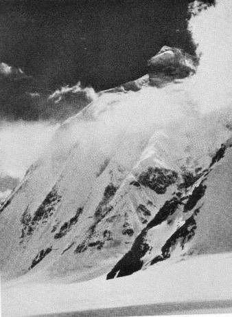

A life that crossed continents
From the Shadows of K2 to the Shores of Tripoli.
THE MEMOIR OF MARIELLA DOOSE HARPER
In 1958, a young woman from Clovis, New Mexico, left for two years abroad. The decades that followed would take her family through Europe, North Africa, the Middle East, and the Far East.

K2 THE SHADOWS01 / THE YEARS
A departure became a lifetime of stories.
The story does not begin at a famous landmark. It begins with a young woman who wanted to see what lay beyond home.
Select a chapter of the journey
The world beyond Clovis
After graduating from Baylor University, Mariella set off on a two-year solo journey abroad. The dream encouraged by her parents in New Mexico was becoming real.
02 / THE BOOKENDS
K2. Tripoli.
A world between.
Two place names frame the memoir's title. The years behind that title stretch across four regions and the changes of an entire era.
Historical photographs of the places named in the title, not photographs from the Harper family collection. View image sources.
04 / THE BOOK
A MEMOIR BY MARIELLA DOOSE HARPER
From the Shadows of K2 to the Shores of Tripoli
From her first solo trip to the years traveling with Bill, Hance, and Scott, Mariella traces how an ordinary family's world grew far beyond its starting point in New Mexico.
Opens the book's retailer listing.